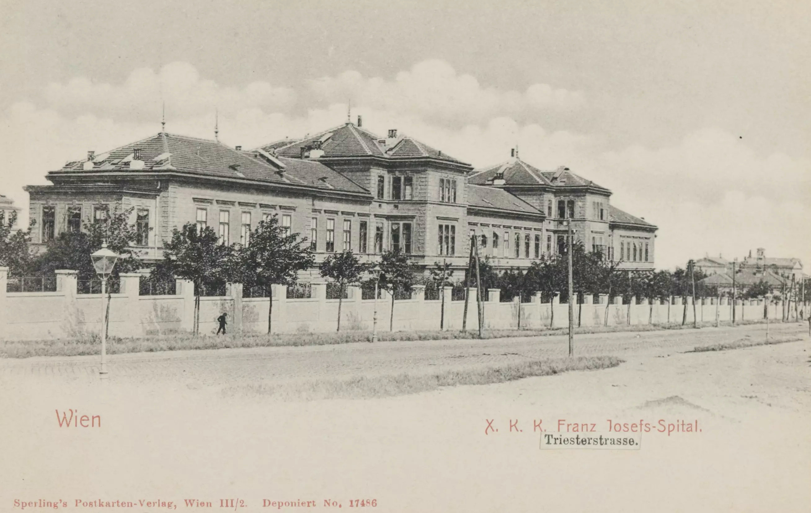
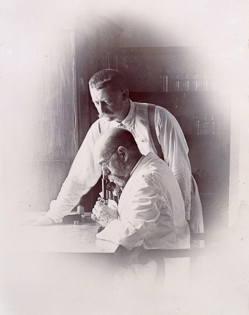
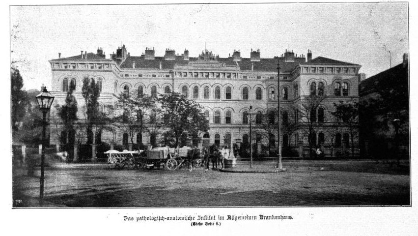
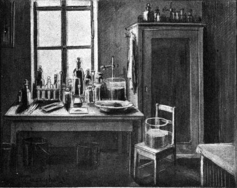
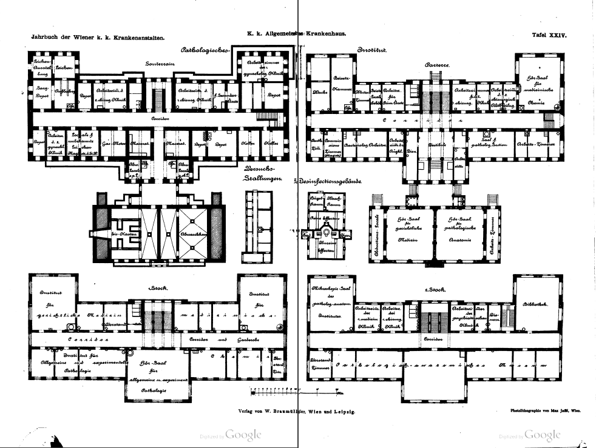

In 1898 three people died of the plague in Vienna. The last plague outbrake before that
lay over 150 years in the past.
Additionally the cases were not caused by natural contagion but were due to a laboratory accident. No wonder this incident sparked general fear and heated media coverage.
The media of the time was the newspaper.
The following web page experience is dedicated to retelling the events through artificial newspaper articles. This means the articles were never printed this way. In fact most of the details surfaced much later. Still the story told was researched in detail. We want to make events relatable and engaging by emulating the newspaper style of the time. This includes the use of old style fraktur script.
Switch back to fraktur script version for the full experience.
If you are interested in sources and further research on the topic, you can find them here
Additionally the cases were not caused by natural contagion but were due to a laboratory accident. No wonder this incident sparked general fear and heated media coverage.
The media of the time was the newspaper.
The following web page experience is dedicated to retelling the events through artificial newspaper articles. This means the articles were never printed this way. In fact most of the details surfaced much later. Still the story told was researched in detail. We want to make events relatable and engaging by emulating the newspaper style of the time. This includes the use of old style fraktur script.
Switch back to fraktur script version for the full experience.
If you are interested in sources and further research on the topic, you can find them here
Vienna Chronicle
Plague Cultures from India
Academy to send doctors to India - Plague expedition sets up camp in Bombay - Plague expedition back home safe
The Laboratory
The Pathological Institute installs a plague room - Insights into plague experiments - Troublsome news from the plague laboratory
The Dead Rat Keeper
Dr. Müller orders quarantine - The Nurses that cared for Barisch - A shocking diagnosis - Franz Josef Hospital in commotion
Preventing an Epicemic
Dr. Müller and nurses move into strict isolation - The hygiene regime at Franz Joseph Hospital - Albine Pecha Feels Sick
General Fear
Prof. Nothnagel under heavy criticism - The city errects plague barracks - Foreign empires inquire about infections
Drama
Health update - Paris sends vaccination serum - Dr. Müller's state is worsening - The death of Dr. Müller
Aftermath
Müller and Pecha are burried - All quarantined declared plague-free - Plague barracks decomissioned - Twenty years ago
Plague Cultures from India
It is the year 1897. The great plague epidemics in Europe are long past.
And even though no one alive can remember, the fear of the disease lingers in the collective mind.
It is therefore of general concern that a major epidemic is spreading again in Asia.
Increased travel and trade might even bring the plague back to our doors.
Academy to send doctors to India
18. Jan. 1897 :: Two years ago the Swiss physician Alexandre Émile Jean Yersin
made public his discovery of a bacterium that is the cause of the plague illness. But still there
is no cure and the epidemic has spread from Hong Kong, where Yersin made his experiments and is
now raging in Bombay, India, where people die on a daily basis from the plague.
As there is fear the epidemic might still spread further the Imperial Academy od Sciences has decided yesterday to send an expedition to Bombay. The expedition staff will consist of three doctors one assistant and one servant. Dr. Hermann Müller, some 31 years young, will take the lead.
As there is fear the epidemic might still spread further the Imperial Academy od Sciences has decided yesterday to send an expedition to Bombay. The expedition staff will consist of three doctors one assistant and one servant. Dr. Hermann Müller, some 31 years young, will take the lead.

Plague expedition sets up camp in Bombay
2. Mar. 1897 :: We have received news, that the plague expedition has reached Bombay on
February 20th. Dr. Müller and his team were welcomed and British Administration Officers invited them
to set up their basecamp at Arthur Road Hospital a center for infectious diseases and in a school
building adapted as a laboratory.
The mission will observe the course of the disease in the infected patients and various tests will be carried out. This will also include animal experiments to investigate the mode of infection.
The mission will observe the course of the disease in the infected patients and various tests will be carried out. This will also include animal experiments to investigate the mode of infection.

Plague expedition back home safe
26. May. 1897 :: Despite close contact with sick people all participants of the plague mission
to India have returned safely to Vienna. After more than two weeks at sea they arrived in Triest on May 17th
and in Vienna the next day. A member of the team Dr. Rudolf Pöch has brought with him photographies
from their work in the city of bombay, which we can proudly show below.


The Laboratory
What exciting times we live in. The rapid advancement of sciences enabled our audacious doctors to
bring back plague cultures from their expedition. The Academy is now looking for feasible rooms to
conduct experiments with the pathogen. Maybe Vienny will be the place to find a cure for this ancient
curse of mankind.
Until a suitable location is found our brave man deservedly spend a recreational vacation. The rumour is that the plague room will be set up within the pathological institute of Prof. Nothnagel at the Vienna General Hospital.
Until a suitable location is found our brave man deservedly spend a recreational vacation. The rumour is that the plague room will be set up within the pathological institute of Prof. Nothnagel at the Vienna General Hospital.

The Pathological Institute installs a plague room
6. Jun. 1897 :: We can confirm that the plague laboratory has been set up in the
Pathological Institute as expected. In this so-called "plague room" the research team will
conducted animal experiments and also keep the infected laboratory animals. This will ring the alarm
bells of those concerned members of the municipal council who intervened in front of the mayor
against the installation of such a facility on Feruary 26th. We all hope the general discomfort eminating
from the notorious article in the Wiener Tagblatt that warned of a "plague pathogen plantation"
will prove to be nothing else than hysteria.
Meanwhile our draughtsman has made a picture of the two-window room paved with stone slabs, which is not connected to any other study.
Meanwhile our draughtsman has made a picture of the two-window room paved with stone slabs, which is not connected to any other study.

Insights into plague experiments
20. Jun. 1898 :: It has been some time snce the last news from the experiments
the doctors of the Vienna General Hospital are carrying out in their laboratory. We have asked
Dr. Ghon and servant Barisch, members of the laboratory staff about the current state of the
ongoing research. Ghon admits that there are no final results available. At the time it is still
unknown which animals can contract the disease. Despite the very confined localities of the
laboratory the team have infected guinea pigs, rabbits, rats, mice, dogs, hyenas, cats, pigs,
monkeys, birds, snakes, lizards and frogs and until the end of October will conduct overall
more than 750 animal experiments to find out how the bacterium enters the organism and how
immunization against the plague can be achieved.
Troublsome news from the plague laboratory
19. Oct. 1898 - morning :: We have to confirm the general rumour that laboratory servant Franz
Barisch has died yesterday. The cause of death is unknown, but given his work with plague infected
animals, one might think of the worst.
However, we want to emphasise that Barisch had been entrusted with this delicate service, which he had volunteered for of his own free will, because of his particular reliability. He had been made aware of the dangers involved and subjected to strict disinfection regulations.
However, we want to emphasise that Barisch had been entrusted with this delicate service, which he had volunteered for of his own free will, because of his particular reliability. He had been made aware of the dangers involved and subjected to strict disinfection regulations.

The Dead Rat Keeper
The death of reliable servant of the Institute of Pathology and Anatomy Franz Barisch, who was well
aware of the dangers of his position as an animal keeper is a tragedy. It was around the time of the last scheduled experiments with only one guinea
alive that Barisch contracted pneumonic plague.

Dr. Müller orders quarantine

19. Oct. 1898 - evening :: In search of the latest developments in the case of the deceased rat
keeper of the plague laboratory we have news to report: The servant Barisch was feeling unwell for a couple of days and diagnosed
with influenza on October 15th. Dr. Müller must have had mixed feelings about the
cause of the illness because he transferred the patient into isolation in the General Hospital and had his flat in the Narrenturm disinfected.
We have no confirmation of any final diagnosis, but it is said, that Barisch's wife was refused to see him before he died.
Meanwhile the deceased has been burried. The cause of death entered in the death register at the church of the Friars Minor reads "blood decomposition".
Meanwhile the deceased has been burried. The cause of death entered in the death register at the church of the Friars Minor reads "blood decomposition".

The Nurses that cared for Barisch
19. Oct. 1898 - evening :: Two nurses held the position at the bedside of the quickly deteriorating Barisch who had died
three days after showing the first symptoms yesterday evening: Johanna Hochecker, who is quite experienced in nursing, and
Albine Pecha, is still a complete beginner. The two attendants had to wash their hands
with a disinfectant liquid after each intrusive manipulation and were not allowed to leave even during their free time,
which Hochecker particularly noticed. According to reports, Pecha is very frightened and often has to be reassured by the
resolute Hochecker, especially as the nurses will have to remain in isolation for the foreseeable future.

Johanna Hochecker

Albine Pecha
A shocking diagnosis
20. Oct. 1898 - morning :: Our investigators report that the diagnosis of “pneumonic plague” was confirmed by
bacteriological examination of the blood and sputum some time
before Barisch's death, which occurred at 5 o'clock in the afternoon on October 18th.
).png)
Franz Josef Hospital in commotion

20. Oct. 1898 - morning :: We hear about a restless atmosphere in the Franz Joseph Hospital. The Kaiser Franz
Josef Hospital, which was only opened by the Emperor in 1891, is an extensive complex of buildings to the south of the city,
enclosed on all sides by a wall and not connected to each other. The so-called “pavilion system” was specifically designed
to contain epidemics. When rumours of an isolated patient in the general hospital spread in here the last few days, there was
probably a lack of understanding among the doctors as to why he was not immediately transferred to this specialized facility
and at the same time unease about the potential danger of the plague.
We hear that city officials are at the infection control department of the Kaiser Franz Josef Hospital this morning to inspect the disinfection area and the expectance barrack, which fortunately are currently empty.
We hear that city officials are at the infection control department of the Kaiser Franz Josef Hospital this morning to inspect the disinfection area and the expectance barrack, which fortunately are currently empty.
Preventing an Epicemic
At 1 p.m. on October 20, a car was said to be on its way from the General Hospital to the Franz Josef Hospital.
Two medical cyclists rush towards it, the tension reaches its climax - then the dark gate of the infectious disease ward opens
and the important carriage comes right up to the expectance barrack, which, together with the surrounding lawn, is demarcated
by a rope stretched from tree to tree. The carriage opens and Dr. Müller swings down light-footedly. He looks a little pale and a
little affected and manages to almost completely conceal his understandable excitement. He introduces himself to the director of
Franz Josef Hospital and the doctors
from the infectious diseases department - but only two of them take Dr. Müller's
offered hand, although he remarks wittily: “I'm not ill, the doctor is not infectious.”
Dr. Müller and nurses move into strict isolation
20. Oct. 1898 - evening :: What probably should have started immediately is now hastily set in motion: The transfer of all activities
to contain the plague outbreak to the Kaiser Franz Joseph hospital. Dr. Müller has joined the nurses Hochecker and Pecha in isolation in a small
pavilion called the "expectance barrack" on the grounds of the Franz Joseph Hospital. This hut was specifically designed to accept
suspected cases of severe infectious diseases. Our informants tell us that, Dr. Müller was feeling well and convened with the Doctors of the Franz Joseph
hospital. He was amused by the strictness of the quarantine provisions and had no premonition of carrying the bacillus himself.
Nevertheless, each of the three moved into separate rooms in the isolation hut. The rooms are
each connected to one other room housing nurses from the Franz Josef Hospital for every patient. No one is allowed to leave
except for Müller for his regular visits to the other patients.
The hygiene regime at Franz Joseph Hospital
21. Oct. 1898 - morning :: As informations flow from Kaiser Fraz Josef Hospital, we can describe now the
many precautions taken by the Franz Josef Hospital to contain the dissease. The measures relate to the three patients and
three seasoned nurses from the center for infectious disseases.
The people in the barracks are cut off from any direct contact with the outside world. The food is carried to them by
the servant who is exclusively assigned to these tasks and emptied into bowls placed on the windowsill of a room
adjacent to the actual sickrooms. Similarly, the delivery of documents, utensils, medicines etc. is never carried
out from hand to hand, but is placed there by the servant and taken over by the nurses after he has removed them.
During off-duty hours, they are allowed to walk on the lawn within the cordon to get some fresh air, a very important
measure! A bell pull leading from Dr. Müller's door into the inspection room on the infection floor, where someone must
always be present due to the permanent telephone service The bell, which leads from Dr. Müller's door into the inspection
room of the infection floor, where someone must always be present due to the permanent telephone service, indicates
that something is wanted from the internees; an appeal that must always be considered before anything else. Any contact,
indeed any excessive approach, seems to be avoided by this system, but only if it is carried out with the utmost care and
rigor. strictness. Three guards, who have to take over from each other every eight hours, patrol the cordon to ensure
that no unauthorized person enters it.
Separate wooden boxes that can be directed by the nurse to hold the waste, which is to be thoroughly mixed with peat
dust in the bucket so that any liquid is absorbed. The contents of the buckets must be emptied into these boxes, the box
closed, the outside thoroughly wiped with 5% carbolic solution and then placed by the attendant in the trolley pushed up
to the entrance door; these boxes must then be driven to the incinerator and thrown into the furnace by the disinfection
attendant, whose hands must be protected by cloths dipped in sublimate solution.
Albine Pecha feels sick

21. Oct. 1898 - evening :: Reports have emerged that, already upon arrival at the Kaiser Franz Josef Hospital, the
nurse Albine Pecha was feeling sick and had a high fever.
One person present described the arrival of the Pecha as follows: She attracted the attention of the people present by her favorable appearance and good posture as well as dress. She is quite tall, of almost Junonian fullness. Her beautifully wavy blonde hair was tied back in a Greek knot at the nape of her neck, and she walked to her premises in a clean white short skirt, patent leather shoes and black stockings, which showed off her natural gifts to their best advantage.
There are no indications of illnesses of Dr. Müller or the nurse Hochecker. Müller, at the same time brave and driven by an unbounded urge for research tends to the other patints on a regular basis.
One person present described the arrival of the Pecha as follows: She attracted the attention of the people present by her favorable appearance and good posture as well as dress. She is quite tall, of almost Junonian fullness. Her beautifully wavy blonde hair was tied back in a Greek knot at the nape of her neck, and she walked to her premises in a clean white short skirt, patent leather shoes and black stockings, which showed off her natural gifts to their best advantage.
There are no indications of illnesses of Dr. Müller or the nurse Hochecker. Müller, at the same time brave and driven by an unbounded urge for research tends to the other patints on a regular basis.
General Fear
The unthinkable has come true. We have now certainty that both Albine Pecha and Dr. Müller carry the plague pathogen.
In fact, Müller already presented so clearly the image of a sick person that the nurse had him take his body temperature.
This happened around noon on October 21. The measurement showed 38.2 degrees - in combination with a cough and sputum,
as in Pecha, a symptom that could not be misunderstood.
Dr. Müller had sent Pecha's sputum, which looked quite characteristic, to the prosectory for examination.
His own, which looked very much like that of his fellow sufferer, was sent at 2 o'clock in the afternoon.
A mere 70 hours after the first death, of the three people who had been working
around Barisch, two now seem to be irretrievably lost, including the doctor, who was not even supposed
to be "infectious" - a downright devastating realization!
Prof. Nothnagel under heavy criticism

21. Oct. 1898 - evening :: We are convinced, that the conditions of the isolation in the General Hospital had
been mediocre at best and it seems to be true that the quarantine room had been directly neighboring two infirmaries, but the
polemic criticism and hatred with which Prof. Nothnagel is attacked from newspapers such as the Deutsche Volksblatt needs to
empathetically disagreed with.
Nothnagel, a most distinguished physician of evangelical confession, is portrayed as the emblem of "Jewish medicine", a term, which encompasses all research based modern advancements and shows a anti-scientific mindset.
Nothnagel, a most distinguished physician of evangelical confession, is portrayed as the emblem of "Jewish medicine", a term, which encompasses all research based modern advancements and shows a anti-scientific mindset.

The city errects plague barracks
22. Oct. 1898 :: The situation in Vienna is tense. The spread of the plague across Vienna is an
imminent threat. The city has established a permanent commitee and has gone into emergency mode. The General Hospital has closed
off the whole section where the infected had been lying and working. Further persons that are thought to have been in
contact with the deceased Barisch are being isolated.
Next to the Franz Joseph Hospital workers are erecting plague barracks to house large numbers of infected people as a matter of precaution.
The sewers are searched for dead rats. We fear that the general commotion is fuelled by ever more unconfirmed rumors in pertinent newspapers.

Foreign empires inquire about infections
22. Oct. 1898 :: There are rumours that tourists leave the city and neighboring countries inquire whether
they should set in place quarantine measures for people entering from Vienna.

Drama
The whole city is shaken by the story of the plague outbrake. Of course there is a lingering fear, but most of all people are moved by the
fate of the innocent Albine Pecha and the brave Dr. Müller, who brought the bcillus from India himself but also showed true
courage in dealing with the outbreak. He is still attending his two patients and it is said that he most probably contracted the
plague himself while he was when he personally scraped the floor and walls of the insulation room at Nothnagel's until 4 a.m. and
cleaned them with carbolic acid and did not allow anyone else to do so.

Health update
22. Oct. 1898 :: The morning bulletin of October 22 reads: Doctor Müller, quiet night, temperature 39.3°, slight drowsiness,
much sputum. Pecha, temperature 40.2°, severe delirium, unconsciousness. Hochecker, healthy, very excited.
Servant Noe, headache, excitement, temperature 36.9°. The nurses (Wilfrieda, Perpetua, Verona) well.
Paris sends vaccination serum
22. Oct. 1898 :: The Franz Josef Hospital has received several doses of the so called "Sérum antipesteux" from the Institute Pasteur in Paris. The parisian
serum will be injected to all persons in isolation in hoe for a cure and a vaccinating effect. We all hope for the best. According to reports
from the Austrian commission the effect of the serum is highly uncertain.
The "Deutsche Volksblatt" is warning of scientific vaccination experiments that are going to be applied to the whole city. After talking to officials we can assure that this is not planned at all.
The "Deutsche Volksblatt" is warning of scientific vaccination experiments that are going to be applied to the whole city. After talking to officials we can assure that this is not planned at all.
Dr. Müller's state is worsening
22. Oct. 1898 - evening :: In the meantime Müller’s state is rapidly worsening. An external doctor has to take over the care for the patients, as Dr. Müller is
not capable anymore. The new doctor, Dr. Pöch, also a member of the plague mission, has to change clothes between every patient -
all clothes are burned immediately - and he has to take baths in diluted disinfectants before and after his visits.
Dr. Müller rejects every form of treatment fully aware of the hopelessness of his situation. All other patients, nurses, doctors, and most of the possible contacts of the infected, who had been brought into isolation too, are inoculated with several doses of plague serum procured from the Pasteur Institute in Paris.
Dr. Müller rejects every form of treatment fully aware of the hopelessness of his situation. All other patients, nurses, doctors, and most of the possible contacts of the infected, who had been brought into isolation too, are inoculated with several doses of plague serum procured from the Pasteur Institute in Paris.

The death of Dr. Müller
23. Oct. 1898 :: God rest his soul. As we now learn, Dr. Müller died in the early morning of the 23rd
of October 1898 at only 32 years of age not even two days after he was diagnosed.
A doctor from the Clinic remembers their last conversation:
A priest is sent to administer the last sacrament through the window.
The same doctor let's us in on the moments Dr. Müller received the last rites from a priest. Dr. Müller sits on the edge of the bed, his hands folded on his knees, unmoving, his gaze steady. At a loss for words, he nods his consent, strikes the cross, and taps his chest. Tears are in his eyes when the priest asks him if he forgives everyone as God forgives him.
A doctor from the Clinic remembers their last conversation:
“Tell everyone to forgive me as I forgive them, and thank all your
colleagues for their kindness, here as well as in the hospital and at the clinic. Give my
regards to all gentlemen, but especially to your Primarius, Dr. Obermayer, and Hofrat
Nothnagel.”
“Is there anything else you wish for?”
“No, I just want to rest and die peacefully.”
A priest is sent to administer the last sacrament through the window.
The same doctor let's us in on the moments Dr. Müller received the last rites from a priest. Dr. Müller sits on the edge of the bed, his hands folded on his knees, unmoving, his gaze steady. At a loss for words, he nods his consent, strikes the cross, and taps his chest. Tears are in his eyes when the priest asks him if he forgives everyone as God forgives him.
Aftermath
Albine Pecha’s fight lasted considerably longer, possibly due to the shots of the serum but
certainly due to the care of the hospital. The doctors applied all treatments available in our time.
She received oxygen from an apparatus that was set up outside the window of her cabin.
While her overall state seemed to be better for a very short time, she died on the 31st of October.

Müller and Pecha are burried

2. Nov. 1898 :: We still have to overcome the tragic events of the last days. Despite all public compassion the
burial of Dr. Hermann Müller and nurse Albine Pecha had to follow a strict orders.
The bodies were put in wooden caskets, which were then disinfected and themselves put in metal caskets.
Again the metal caskets were disinfected and then sealed off hermetically. The bodies were then buried within 24 hours.

All quarantined declared plague-free
14. Nov. 1898 :: For some days now we haven't heared about the plague. The city is long back to normal. But just
today the Franz Josef Hospital has released the last people living under quarantine and declared that there are no more
suspected cases of plague in Vienna.
The quarantine measures of the new Franz Joseph Hospital for infectious diseases have proven very
effective. All persons inoculated with the serum felt side effects but in the end, recovered
and the spread was stopped entirely.
Already ten days ago the general hospital has reopened all institutes and work is carried out regularly.
Plague barracks decomissioned
5. Dec. 1898 :: The isolation hut on the grounds of the Franz Josef Hospital has reopened. Following the
notorious plague cases the hut had been disinfected and sealed of for a prolonged time. Now the doctors of the clinic say
it is safe for new patients to move into the rooms.
The disinfection process consisted of fumigating the whole building with glycoformal then sterilizing all of it's contents with high pressure steam, disinfecting the same in liquid acid and then burning all of it.
The city councilalso announced that all of the precautiously errected plague barracks have now been decomissioned.
The disinfection process consisted of fumigating the whole building with glycoformal then sterilizing all of it's contents with high pressure steam, disinfecting the same in liquid acid and then burning all of it.
The city councilalso announced that all of the precautiously errected plague barracks have now been decomissioned.
Twenty years ago

18. Oct. 1918 :: In these darkest of days we want to remind our readers of a story that unfolded exactly twenty
years ago. On this day in 1898 the death of a hospital servant, set off hasty measures to prevent a plague epidemic. Despite
all efforts and much compassion Dr. Müller, Albine Pecha and Franz Barisch died, making them the last plague victims to date
in our country.
Today we have suffered through four years of the most devastating war, hunger is a universal pain and we are not convinced that the manifest published two days ago by our emperor Karl will stop the disintegration of this state. Above all it seems a new epidemic is upon us. News about a deadly flu, often called the spanish sickness, are growing rapidly.
In hindsight the episode from 1898 seems much less dramatic now. Who could have thought of the horrors facing us back then?
Today we have suffered through four years of the most devastating war, hunger is a universal pain and we are not convinced that the manifest published two days ago by our emperor Karl will stop the disintegration of this state. Above all it seems a new epidemic is upon us. News about a deadly flu, often called the spanish sickness, are growing rapidly.
In hindsight the episode from 1898 seems much less dramatic now. Who could have thought of the horrors facing us back then?